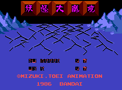

Gegege no Kitarou (NESA)

Gegege no Kitarou is an anime aimed for kids based on traditional Japanese
monsters, ghosts, and spirits. It is a horizontal-scrolling platform game.
It was released in the US under the name Ninja Kid with many changes
including character graphics.
Return to Emulator Table of Contents
Last Modified 7 April 1997
Created 19 Oct 1996
Luis A. Cruz
cruzl@ccs.neu.edu